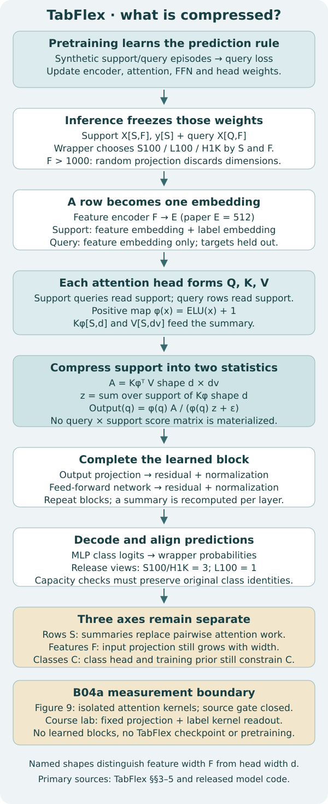
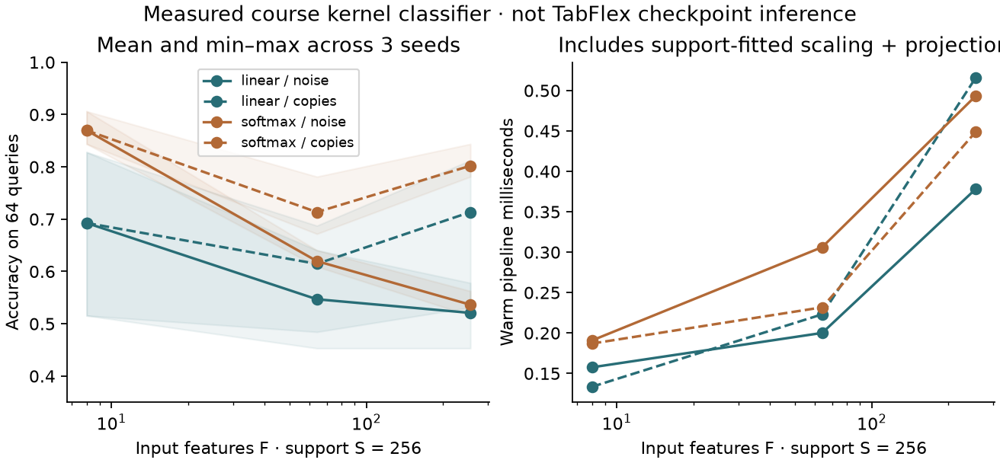

Research bridge · B04a · elective
Scaling rows, features and classes¶
Your win: locate the bottleneck in a tabular predictor, replace a pairwise kernel calculation with sufficient statistics, and defend a comparison that preserves the prediction task.
B04: TabICL compressed each row before dataset attention. Its remaining question was: can we avoid constructing interactions between every query and every support row? TabFlex changes that operation. It does not make feature width or class capacity disappear. This matters for the relational mission: flattening a database can multiply columns, while retrieving more related rows increases context. Those are different interventions.
Route: 25–35 minutes for the lesson, then the elective's 3–5 hour lab and defense. Student notebook · Executed solution · Reference · Reproduction contract.
A support set supplies examples and their labels. A query set supplies examples to predict. We use S support rows, Q query rows, F raw features, C classes, d coordinates in an attention head and dv value coordinates. F is not d: an encoder can map 256 raw features into a 16-dimensional vector, but that encoding has a cost and loses information.
Take S=128, Q=64, F=64, d=16 and dv=2. An explicit query-to-support score matrix contains 64×128=8,192 numbers. The two support summaries below contain 16×2+16=48 numbers. That comparison counts these intermediates only: inputs, outputs, projections and other model layers still exist. It is not a measured memory ratio for TabFlex. Attention formulation.
See the idea · then trace the details
TabFlex: summarize keys and values before the query
Associativity can change the cost of attention without building every pairwise score.
1Encode support and query
Support keys/values; separate query features
Pretrained encoders prepare representations. Label visibility and feature preprocessing still define which information enters.
2Accumulate sufficient statistics
S = Σ φ(kᵢ)vᵢᵀ; z = Σ φ(kᵢ)
Aggregate support contributions before processing each query. These statistics depend on the chosen feature map and attention formulation.
3Read the summary
Read φ(q)ᵀS, normalize with φ(q)ᵀz
A query reads the accumulated support state. This avoids explicitly materializing the full query-by-support interaction matrix in the illustrated normalized kernel calculation.
Pause and predict: Does this algebra make a kernel-attention model exactly equivalent to arbitrary softmax attention?
No. The feature map, normalization and model design determine the operator. An efficient factorization does not prove equality to a different attention kernel.
Answer: No. The feature map, normalization and model design determine the operator. An efficient factorization does not prove equality to a different attention kernel.
2. Change the operator, then reassociate it¶
Ordinary softmax attention assigns support j a weight proportional to exp(q · k_j / sqrt(d)). Linear attention instead chooses a positive feature map φ and uses φ(q) · φ(k_j) as its similarity. TabFlex's released ELU+1 map is φ(x)=x+1 for x≥0 and exp(x) for x<0. These similarities are different; linear attention is not an exact rearrangement of softmax.
Once the kernel has been chosen, reassociation is exact up to floating-point arithmetic:
A = φ(K)ᵀ V # d × dv, weighted value totals
z = sum_j φ(k_j) # d, support mass
output(q) = φ(q) A / (φ(q) z + ε)
A and z are sufficient statistics for this readout: after computing them, this operation needs no individual support row. That is narrower than saying they preserve all useful information in the dataset. Two different support sets can share the same summary. TabFlex §3 and §5 · Released operator.
Work one query by hand. Let q=0, k=[0,1], v=[2,8], all scalar. Then φ(q)=1, φ(k)=[1,2], A=18 and z=3. With ε=0, the answer is 6. With the release's ε=10⁻⁶ it is 18/(3+10⁻⁶). Using a plain sum of v would give 5 and discard the kernel weights. The notebook CHECK uses this oracle, signed inputs, support permutations and query batching.
For fixed d and dv, forming A costs work proportional to S·d·dv, then reading it for Q queries costs Q·d·dv. Explicit kernel weights require Q·S·d work before value aggregation. If d grows, the summary also grows: “linear in rows” does not mean “constant in model width.” FlashAttention can avoid storing a full score matrix while still computing pairwise attention; distinguish arithmetic, stored intermediates and hardware memory traffic. TabFlex Appendix C.1.
3. Put the statistic inside the actual model¶


The released TabFlex model encodes each row, adds a label embedding to support rows, and applies learned attention and feed-forward blocks. Support rows attend to support; query rows read support. Every block recomputes projected keys, values and summaries from its current representation. A final head emits class logits. Pretraining learns those transformations from synthetic episodes; inference uses frozen weights. A single untrained label-averaging kernel is only the mechanism lab below. Model composition · Complete executable source archive.
The pinned wrapper selects L100 for S≥3000 and F≤100; otherwise H1K for F>100 (or its stated high-dimensional condition), and S100 for the remaining cases. Beyond 1000 features it requests random projection. It uses one ensemble configuration for L100 and three for S100/H1K. So a comparison that crosses a routing boundary can change checkpoint, feature reduction and ensemble size together. Release routing.
Source reading trap: Figure 9's Listing 1 times the unnormalized core Q(KᵀV). The released model also maps Q/K and divides by a normalizer. Those are related but distinct operations. Our parity test executes the unmodified released operator on random tensors; it does not validate the figure's timings, a checkpoint's quality or the whole transformer.
4. Three axes, three different questions¶
| Axis | Question to ask | What a shortcut can discard |
|---|---|---|
| More rows S | Can every query still use all support examples? | Subsampling or retrieval can omit informative examples. |
| More features F | What reaches the row encoder, at what cost? | Selection/projection can remove directions carrying signal. |
| More classes C | Do output columns still represent the original labels? | Merging labels changes the prediction task. |
TabPFN-Wide changes the training distribution. Its continued pretraining uses a prior widened through sparse linear mixing and noise. It adapts to wide, correlated tables while retaining the base architecture's computational constraints. More raw columns need not mean more independent signal. The lab's repeated copies are a simple control, not that published widening generator. Attention maps are not causal feature attribution. Wide §4 and limitations.
BETA changes task adaptation and aggregation. It uses learned encoders and bagging to adapt TabPFN. That is a useful comparison with an attention-kernel change: learned compression and repeated predictions have their own training, selection and inference costs. We do not run BETA or claim a matched performance comparison here. BETA primary paper.
Class capacity is a semantic boundary. We executed only the pinned release's preprocessing method with a configured capacity of 10. Inputs containing 2 or 10 classes retained their class counts; 11 classes became 10 effective labels. This result is specific to that method and configuration, not a universal TabFlex limit. The course encoder rejects 11 classes instead. Run class_values([20,10,20], [20,10], 2) and explain why column order matters even when labels are nonconsecutive.
5. Run a comparison whose inputs are visible¶
Our frozen course experiment has three seeds, S∈{64,256,1024}, F∈{8,64,256}, two widening rules and two kernels: 108 settings, each with 64 queries. For every seed, the eight latent features determine a noisy binary label. Wider inputs either append independent noise or repeat the latent features. Support prefixes are nested; query IDs stay fixed.
The pipeline is visible: support-fitted mean/std → fixed random projection to d=16 → softmax or ELU+1 label readout → class probabilities. Projection weights depend on F, not target values. Every setting uses one view, no optimizer and no hyperparameter selection. Linear outputs are finally normalized over classes; its ε normalizer then cancels from that class distribution. This is explicitly not pretrained TabFlex inference.
| Kernel / widening | F | Mean accuracy | Min–max over 3 seeds | Mean log loss |
|---|---|---|---|---|
| linear / noise | 8 | 69.27% | 51.56–82.81% | 0.655143 |
| linear / noise | 64 | 54.69% | 45.31–64.06% | 0.693164 |
| linear / noise | 256 | 52.08% | 45.31–57.81% | 0.695474 |
| linear / copies | 8 | 69.27% | 51.56–82.81% | 0.655143 |
| linear / copies | 64 | 61.46% | 48.44–68.75% | 0.674925 |
| linear / copies | 256 | 71.35% | 53.12–81.25% | 0.656799 |
| softmax / noise | 8 | 86.98% | 84.38–90.62% | 0.432134 |
| softmax / noise | 64 | 61.98% | 60.94–64.06% | 0.670777 |
| softmax / noise | 256 | 53.65% | 51.56–56.25% | 0.690670 |
| softmax / copies | 8 | 86.98% | 84.38–90.62% | 0.432134 |
| softmax / copies | 64 | 71.35% | 67.19–78.12% | 0.571999 |
| softmax / copies | 256 | 80.21% | 78.12–84.38% | 0.440569 |


At S=256, adding noise from 8 to 256 features reduced mean accuracy from 69.27% to 52.08% for the linear kernel and from 86.98% to 53.65% for softmax. Three paired seeds support this statement about this generated problem only. Correlated copies introduce no new independent signal, but the projection and similarity geometry change, so their scores need not remain fixed. At F=8, both widening rules are identical; all paired predictions match exactly. This is a useful negative control.
Predict before inspecting: should a theoretically cheaper attention readout always make this entire small pipeline faster? No. Scaling, projection, allocation and interpreter/library overhead also consume time. Cold is the first pipeline call in a fresh worker; warm is the median of three further complete pipeline calls, including refitting support scaling. Neither flushes the operating system's caches. RSS is peak CPU memory of the whole process, including JSON loading. It is not peak CUDA memory or isolated attention allocation.
The independent audit reconstructs all 6,912 predictions using an explicit query×support kernel and independently scores their labels. It rejects missing settings, duplicate identities, reordered queries, changed class columns and other corruptions. Agreement checks arithmetic and recorded identities; it does not prove generalization beyond this experiment. Frozen inputs, settings and results.
A current production TabICLv2 result would answer a different question from a paper-era TabPFN or TabFlex comparison. B04's small checkpoint diagnostic has different inputs and settings, so we do not rank it against this matrix. Fresh current-checkpoint and paper-era model comparisons remain NOT_RUN here.
6. Full reproduction has an explicit boundary¶
B04A-TABFLEX-FIG9-ATTENTION-SCALING — INCOMPLETE_SOURCE_PROTOCOL. The published target spans three operators, four head widths, four head counts, twelve sequence lengths, batch size 10 and five repetitions: 2,880 planned operator repetitions. Its reported failures cover 120 of those slots for causal FlashLinearAttention. Failures belong in the record; do not silently delete them or replace them with a smaller grid. Figure 9 protocol.
We pinned the repository at 3c36d9c1785844d5e983b0baf0ef4116670aa809, archived the paper and release, and searched code plus notebook sources. We did not recover an authenticated Figure 9 measurement script, raw per-repeat references, exact input generation/seeds, or a complete hardware/precision/kernel/timing contract. The paper's training hardware does not identify the benchmark hardware. This bounded search does not prove the artifacts exist nowhere.
The packaged --run preflight exits before execution. It is a working gate, not a finished Figure 9 runner. Unblocking requires recovering those details, implementing the original benchmark dispatch and forecasting the complete grid at verified rates. A changed GPU would require a declared replication protocol and would not reproduce an absolute historical runtime.
Budget: $10 aggregate, $2 reserved, no paid dispatch while the gate is closed. Author cloud/API spend is $0. Whole-paper benchmarks, pretraining, pretrained TabFlex inference, TabPFN-Wide continued training and BETA runs are NOT_RUN. These limitations do not disappear when the course lab passes. Commands and exact evidence boundaries.
7. TODO → CHECK → written defense¶
- TODO: implement associative normalized attention, support-only scaling and an exact class encoder in the student notebook. Predict the hand result first. The implementations must drive the exercises; the notebook leaves these functions blank.
- CHECK: compare your readout with a scalar support-by-support oracle. Permute support rows and batch the queries. Demonstrate rejection of 11 classes under capacity 10. Change query values without refitting the scaler.
- APPLY: select a measured operating point and its paired control. Report what changed, what remained fixed, quality, cold/warm time and peak process RSS. Explain why this is not Figure 9 or checkpoint evidence.
- EXIT: draw the complete TabFlex path, distinguish F from d, name information lost by one scaling shortcut, and give a falsifier for your chosen comparison. State the precise evidence needed to reopen the paper gate.
A passing author package is not your written defense. Status remains PENDING_WRITTEN_DEFENSE. Revisit one shape trace tomorrow, an unfamiliar row/feature/class scenario after 7 days, and the comparison contract after 30 days. Ask the teaching agent any follow-up questions or submit your defense for feedback.
Next: B05's planned retrieval-based approach chooses which rows enter context. Carry this lesson's information and resource accounting into B09's operating-point comparison. Start primary reading with TabFlex §5 and Appendix C.1.